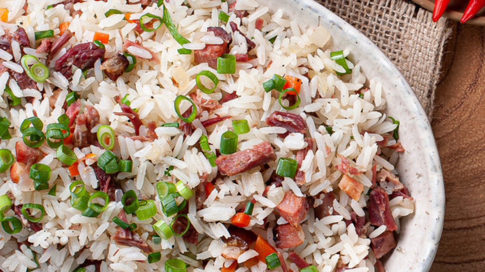

Melhores receitas.
Arroz de Carreteiro
- 500 g de charque
- 1 colher (sopa) de óleo
- meia cebola média picada
- 2 dentes de alho amassados
- meio pimentão verde picado
- 4 tomates sem pele picados
- 2 xícaras (chá) de água quente
- 1 xícara (chá) de arroz
- 1 tablete de MAGGI® Caldo Carne
- meio maço de cebolinha-verde picada
- 1.Em uma panela de pressão, cozinhe a charque por cerca de 20 minutos.
- 2.Escorra a água da panela e corte a charque em cubinhos. Reserve.
- 3.Em uma panela, aqueça o óleo e refogue a cebola, o alho e o pimentão.
- 4.Junte a charque e deixe fritar até dourar.
- 5.Acrescente os tomates e, em seguida, o arroz.
- 6.Acrescente o MAGGI Caldo dissolvido na água quente para cozinhar o arroz, sem deixar secar totalmente.
- 7.Acrescente a cebolinha verde e sirva.
Pudim

- Calda
- 1 xícara (chá) de açúcar
- meia xícara (chá) de água quente
- Pudim
- 1 lata de MOÇA® de Colher Doce de Leite
- 2 medidas (da lata) de Leite Líquido NINHO® Forti+ Integral
- 3 ovos
- Calda
- 1.Em uma panela de fundo largo, derreta o açúcar até ficar dourado.
- 2.Junte a água quente e mexa com uma colher.
- 3.Deixe ferver até dissolver os torrões de açúcar e a calda engrossar.
- 4.Forre com a calda uma forma com furo central (19 cm de diâmetro) e reserve.
- Pudim
- 1 lata de MOÇA® de Colher Doce de Leite
- 2 medidas (da lata) de Leite Líquido NINHO® Forti+ Integral
- 3 ovos
Bolo
- 2 xícaras (chá) farinha de trigo
- 2 xícaras (chá) de açúcar refinado
- 1 xícara (chá) Leite Líquido NINHO® Forti+ Integral
- 2 ovos
- 4 colheres (sopa) óleo de soja
- 1 pitada de sal
- 1 colher (sopa) fermento químico em pó
- 1 colher (sopa) de essência de baunilha (opcional)
- 1. Em uma batedeira, bata todos os ingredientes, exceto o fermento, até obter uma massa homogênea. Adicione o fermento e bata em velocidade baixa apenas para incorporar.
- 2. Transfira a massa para uma forma redonda de furo central (20 cm), untada e enfarinha, e leve para assar em forno médio (180ºC), preaquecido, por cerca de 35 minutos ou até dourar e ficar seco. Sirva quente ou espere esfriar.